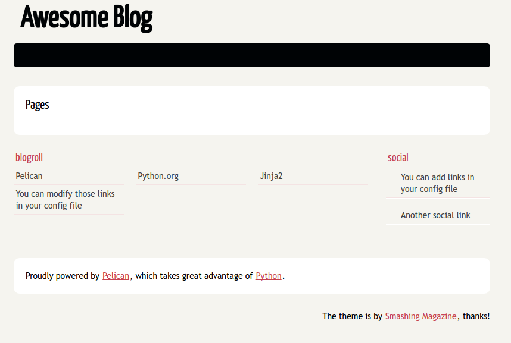

Building a static site and hosting in Github (part 1)
Posted on January 28, 2017 in tutorial • 4 min read
For this tutorial series, I'm assuming that you are working in a Linux environment. If not, you can use virtualenv for Windows or Mac.
Getting started
First the big question, "What is Pelican?"
In short, Pelican is a static site generator that supports Markdown and reST syntax. Powered by Python. For more visit, getpelican.com
For this tutorial, you only need to understand basic Git push/pull and branching command and as well as some basic Markdown syntax. If you are a noob, no worries I'll cover each and every topics in detail.
Prerequisits:
Setup Github page
First you need to have a github.io page. Noew, clone your github.io repository and cd into it.
1 2 | $ git clone https://github.com/username/username.github.io
$ cd username.github.io/
|
Create a new Git branch called source or your any custom name. This new branch only holds your source code. The HTML generated by Pelican will be pushed to master branch which are then rendered in the website. We'll do Git push shortly. But, first let's create a new branch.
1 | $ git checkout -b source
|
Push the new branch on Github:
1 | $ git push origin source
|
You are now working on the source branch.
Setup Pelican
Let's start with installing Pelican at the first place. Pelican, Pelican-Plugins and Pelican-Themes are dependent on different python modules and installing them one by one is a pain in the butt. Hence, for the simplicity, create a new file called requirements.txt.
Open requirements.txt file in a notepad or gedit and paste the lines given below and save it.
1 2 3 4 5 6 7 8 9 10 11 12 13 14 15 16 17 18 19 20 21 22 | appdirs==1.4.0
beautifulsoup4==4.5.1
blinker==1.4
bs4==0.0.1
docutils==0.12
ecdsa==0.13
Fabric==1.12.0
feedgenerator==1.9
ghp-import==0.4.1
Jinja2==2.8
Markdown==2.6.7
MarkupSafe==0.23
packaging==16.8
paramiko==1.17.2
pelican==3.6.3
pycrypto==2.6.1
Pygments==2.1.3
pyparsing==2.1.10
python-dateutil==2.5.3
pytz==2016.7
six==1.10.0
Unidecode==0.4.19
|
These are the modules that we need to get started with the Pelican static website generation.
To install the modules which are inside requirements.txt, type the following command in the terminal.
1 | $ pip install -r requirements.txt
|
If you don't know what is pip and how to install it, go here.
Upto this step you've setup a github.io blog and installed Pelican and it's dependencies.
Pelican Quick Start
After installing pelican, you can leverage the command $ pelican-quickstart from the command line.
Quick Setup
cdinto yourusername.github.iorepository that you cloned earlier.$ cd username.github.io- Save this .gitignore file in your directory. It's needed to make your Github repo clean.
- Run
$ pelican-quickstartin the terminal
The quickstart will ask you various questions, which you can answer in turn. Here are some specific answers you should give:
1 2 3 4 5 6 7 8 9 10 11 12 13 14 15 16 17 18 19 | > Where do you want to create your new web site? [.] (hit enter)
> What will be the title of this web site? My Awesome Blog
> Who will be the author of this web site? (Your Full Name)
> What will be the default language of this web site? [en] (hit enter)
> Do you want to specify a URL prefix? e.g., http://example.com (Y/n) Y
> What is your URL prefix? (see above example; no trailing slash) http://your_username.github.io
> Do you want to enable article pagination? (Y/n) Y
> How many articles per page do you want? [10] 10
> What is your time zone? [Europe/Paris] Asia/Kathmandu
> Do you want to generate a Fabfile/Makefile to automate generation and publishing? (Y/n) Y
> Do you want an auto-reload & simpleHTTP script to assist with theme and site development? (Y/n) Y
> Do you want to upload your website using FTP? (y/N) N
> Do you want to upload your website using SSH? (y/N) N
> Do you want to upload your website using Dropbox? (y/N) N
> Do you want to upload your website using S3? (y/N) N
> Do you want to upload your website using Rackspace Cloud Files? (y/N) N
> Do you want to upload your website using GitHub Pages? (y/N) Y
> Is this your personal page (username.github.io)? (y/N) Y
Done. Your new project is available at /<path>/your_username.github.io
|
That's it. Now you have the basic structure of your Pelican blog. The tree structure of the pelican blog is:
1 2 3 4 5 6 7 8 9 10 | .
├── content
├── develop_server.sh
├── fabfile.py
├── Makefile
├── output
├── pelicanconf.py
└── publishconf.py
2 directories, 5 files
|
Here, each files and folder have a specefic meaning. I'll discuss more on it later.
Build and serve
Generate HTML. All HTML files are generated in the output directory.
1 | $ fab build
|
Here fab is a build tool that comes with Fabric module. Now, serve the HTML.
1 | $ fab serve
|
And redirect your browser to http://localhost:8000. You'll see the result.

Note: The website generated is only visible in local environment. We haven't pushed anything to Github yet. It'll be done after all configurations have been setup correctly.
Now, just sitback, relax and observe every files inside the directory. If you understood nothing, maybe learn some Markdown.
In Part 2 we'll write our first blog post, configure and fabricate pelican, and our first commit to the github.